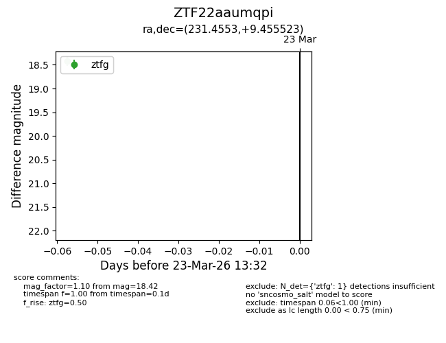
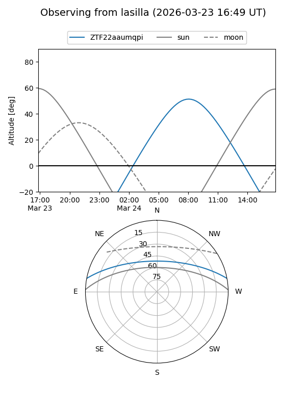
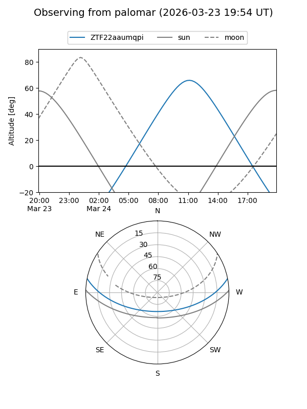

ZTF22aaumqpi
Target ZTF22aaumqpi at 2026-03-23 13:34
Aliases and brokers:
FINK: link
Lasair: link
ALeRCE: link
alt names
ZTF22aaumqpi (ztf,fink_ztf)
Coordinates:
equatorial (ra, dec) = 231.4553,+9.45552
equatorial (HMS+DMS) = 15:25:49.28,+09:27:19.88
galactic (l, b) = (14.4790,+49.55628)
Flags:
Photometry:
last ztfg=18.42
1 ztfg detections
Lightcurve

Visibility


Additional plots